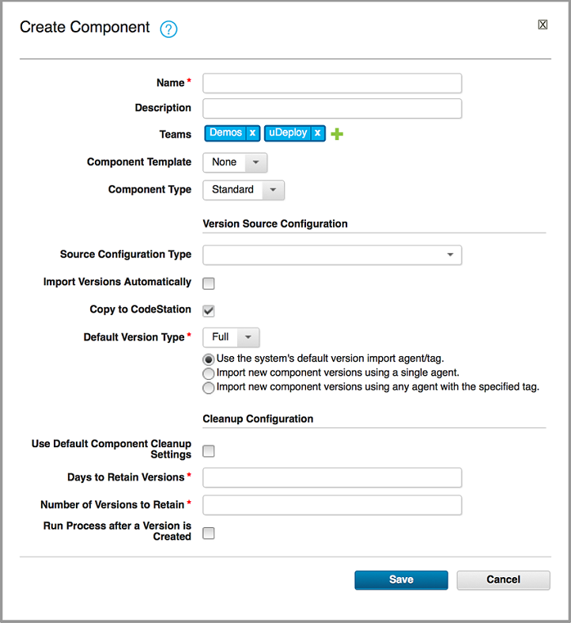

Creating components
In general, component creation is the same for all components.
When you create a component, you complete these tasks:
-
Define the source type.
You name the component, specify the agent to import the artifacts, and identify the type of artifacts and their location. Source artifacts can come from a file system, a source code management system such as Subversion, or another source-type plug-in. A component can contain any number of artifacts, but they must all have the same source type.
-
Assemble processes.
A process defines what HCL® UrbanCode™ Deploy does with the component's artifacts. A process might consist of any number of steps, such as stopping and starting target servers and moving files. In addition to deploying components, processes can import artifacts and run various utility tasks.
A component consists of artifacts of a single source type and one or more processes.
In addition to creating a component manually, you can use a template to create one, or you can import a component directly. See Component templates and Importing components.
-
On the Components page, click Create Component. Several fields in the Create Component window are the same for every source, while others depend on the source configuration type that is selected from the Source Configuration Type list.

-
Define standard parameters.The fields in the following table are available for every source type. If you select a source configuration type from the Source Configuration Type list, fields specific to the selected type are also displayed.
Field Description Name The name identifies the component throughout the product UI. Description The description can be used to convey more information about the component. If the component is used by more than one application, for example, entering Used in applications A and B can help identify how the component is used. Teams The team that manages the component. Previously defined teams and roles are available. For information about teams, see Managing security Template You can use a component template to reuse component definitions. Components that are based on templates inherit the template's source configuration, properties, and process. Previously created templates are listed. A component can have a single template that is associated with it. The default value is None.
If you select a template, the Template Version field is displayed which is used to select a template version. By controlling the version, you can roll out template changes as needed. The default value is Latest Version, which means that the component uses the newest version (by creation date). See Component templates.
Note: If you select a template that includes a source type, the dialog box changes to reflect values that are defined for the template. Several fields, including the Source Configuration Type field, become populated and locked.
| |Component Type|Identifies whether the component is based on IBM® z/OS® artifacts. If you select z/OS, the source configuration controls are not available. Artifacts that are stored in z/OS do not use source configurations. To learn more about configuring and deploying z/OS components, see Deploying to the z/OS platform.| | Source Configuration Type |Defines the source type for the component's artifacts. All artifacts must have the same source type. Selecting a plug-in shows the fields that are associated with the plug-in. Source-dependent fields are used to identify and configure the component's artifacts. If you selected a template that includes a source type, this field is locked, and its value is inherited from the template. For information about creating components of specific types, see Creating components from the file system, Creating components from build integration tools, or Creating components from source-code management systems.
|
|Import Versions Automatically |If selected, the source location is periodically polled for new versions. Found versions are automatically imported. The default polling period is 300 seconds, which can be changed with the System Settings pane. If left cleared, you can manually create versions by using the Versions pane. By default, the box is cleared.|
| Copy to CodeStation |Creates a tamper-proof copy of the artifacts and stores them in the embedded artifact repository, CodeStation. If cleared, only metadata about the artifacts is imported. In most cases, select this check box. The default for this setting is in the system setting Components copy to CodeStation by default; see Server settings.|
| Default Version Type |Defines how component versions are imported into CodeStation. The Full value means that the version is comprehensive and contains all artifacts. The Incremental value means that the version contains only the artifacts that were modified from the previous version. The default value is Full.|
| Use the system's default version import agent/tag |If selected, the agent or tag that you specified on the System Settings page is used to import component artifacts. The agent or tagged agents must have access to the system where the artifacts are located. See Server settings.|
| Import new component versions using a single agent |If selected, use the Agent for Version Imports field to designate the agent that imports artifacts into the component. The agent must have access to the system where the artifacts are located. To import artifacts from the server location, install an agent in the same location and specify that agent.|
| Import new component versions using any agent with the specified tag |If selected, use the Agent Tag for Version Imports field to designate the tag that is used to identify the agents that can import artifacts into the component. Tagged agents must have access to the system where the artifacts are located.|
| Inherit Cleanup Settings |When this check box is selected, this component uses the artifact cleanup settings in the system settings. Clear to provide retention values for this component. If this check box is cleared, you must specify values for these settings: - Days to Retain Versions: The number of days to retain component versions after they are created. For example, if you specify 30, component versions are archived when they are older than 30 days and have no other setting that keeps them. To retain component versions indefinitely, enter - 1. To use the system default retention value, enter 0.
- Number of Versions to Retain: The number of versions to retain for each component. For example, if you specify 10, the server keeps the 10 most recently created component versions. To retain all component versions, enter -1. To use the system default retention value, enter 0.
For more information about cleaning up component versions, see Cleaning up component versions. |
| Run process after a Version is Created |To automatically run a process after versions are imported, select this check box, and then specify an application process and an environment for the process. The process runs only when the version is imported automatically, not when you import versions manually. Similarly, the process does not run when you create versions with the REST API or the udclient command. If the automatic version import finds multiple versions, the process runs only once.|
-
If you select a source configuration type, enter values into the source-specific fields.
For information about creating components of specific types, see Creating components from the file system, Creating components from build integration tools, or Creating components from source-code management systems.
-
When finished, save your work. Saved components are listed in the Components pane.
-
Getting started with creating components
Components are the centerpiece of the HCL UrbanCode Deploy deployment engine. Components associate deployable items (artifacts) with processes that deploy them. - Creating components from the file system
You can create components by importing artifacts from the file system on the HCL UrbanCode Deploy server. You can import a single version or automatically import versions as they are added to the file system. - Creating components from source-code management systems
You can create components from the artifacts in various source-code management systems. - Creating components from build integration tools
You can create components from the artifacts in various build integration tools. - Creating component versions with the command-line client
If HCL UrbanCode Deploy does not have a source configuration type for your external tool, you can use the udclient command-line client to manage components. - Importing components
Importing and exporting can be especially useful if you have multiple HCL UrbanCode Deploy servers, for example, and must quickly move or update components. - Exporting components
Importing and exporting can be especially useful if you have multiple HCL UrbanCode Deploy servers, for example, and must quickly move or update components.
Parent topic: Components